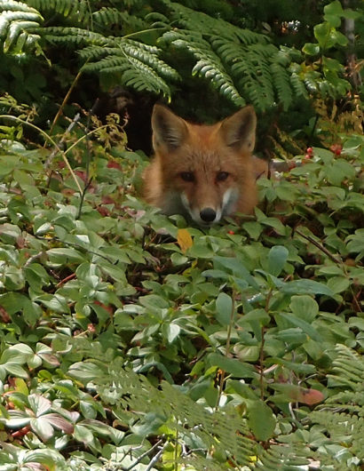
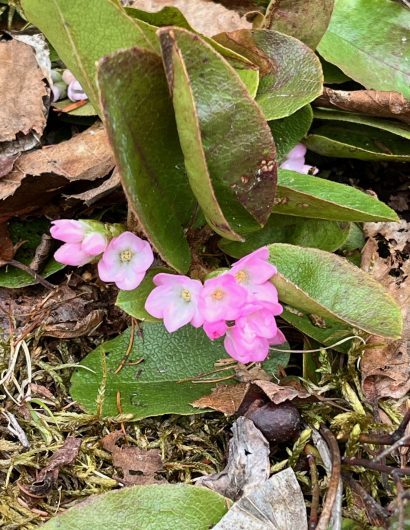
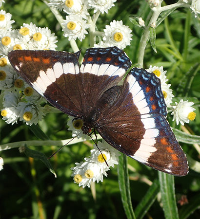

Spring, Summer & Fall Activities
Enjoy nature with us
As the snow melts, signs of spring emerge and the trails come alive with colourful flora and fauna. A great hike awaits when skis and snowshoes are replaced with hiking boots, and you can explore the trails on bicycle once the trails firm up. Lone Pine and Looper are mowed in the summer months.


